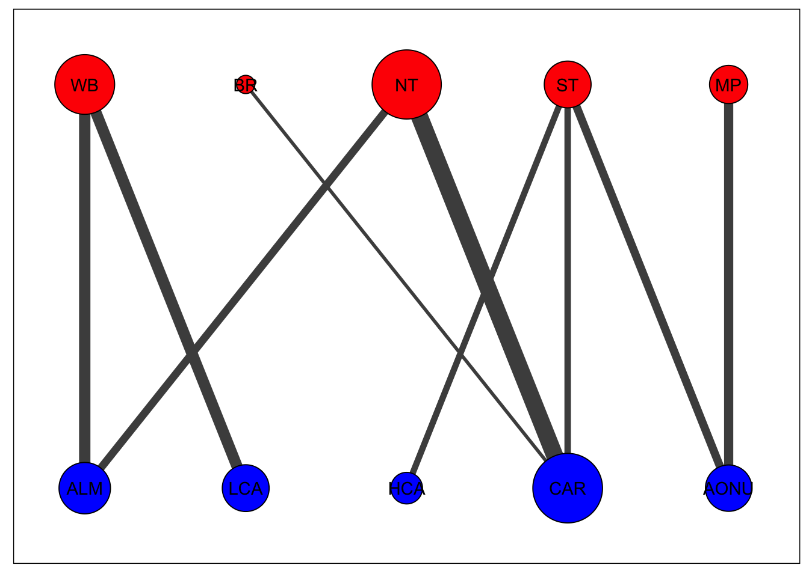

Chapter 2 Quick start example
Here, we demonstrate a quick example of how to create a migratory network when the user has all of the data required. To run this tutorial, load the following packages:
The data required are:
- Relative abundance matrix for each node
- Assignment matrix of individuals among nodes
We provide an example of these data in mignette, with assignment data from 3 populations from the breeding range (WB = Western Boreal, NT = Northern Temperate, ST = Southern Temperate) and nonbreeding range (ALM = Atlantic Lowland Mexico, CAR = Caribbean, AONU = Amazon/Orinoco-Northern Uplands) of the American Redstart (Setophaga ruticilla). The assignment matrix specifies the number of individuals that have been sampled or detected that migrate between different populations (i.e. connect the nodes).
| Breeding | CAR | AONU | ALM | HCA | LCA |
|---|---|---|---|---|---|
| BR | 2 | 0 | 0 | 0 | 0 |
| MP | 0 | 9 | 0 | 0 | 0 |
| NT | 54 | 0 | 3 | 0 | 0 |
| ST | 12 | 12 | 0 | 4 | 1 |
| WB | 1 | 0 | 19 | 1 | 13 |
Assignment data input into mignette needs to follow the above format, where the first column specifies breeding population IDs while subsequent columns are the nonbreeding populations.
We also provide the relative abundance of these populations:
| Population | Relative_abundance |
|---|---|
| BR | 2403 |
| ST | 9419 |
| MP | 19011 |
| NT | 72147 |
| WB | 26080 |
| HCA | 326 |
| AONU | 1139 |
| LCA | 2802 |
| ALM | 3169 |
| CAR | 7987 |
The relative abundance data needs to follow the above format for input into mignette functions with population IDs (same names as in the assignment file) in the first column and relative abundance values in the second column. Column names can follow any naming convention when inputting these data into mignette.
For the following functions, we specify the order of the populations we are using for the model. Here, we are just ordering populations geographically by longitude to facilitate straightforward interpretation of the output.
The following code provides the necessary data to run the JAGS model. To create the migratory network, the user first creates a text file specifying the JAGS model to be used, providing the name of the file to be saved (base_filename) and the type of model type (model_type). Currently mignette supports two model types based on the type of data used to determine assignment of individuals: 1 indicates that only genetic data were used for assignment, and 2 indicates that there’s assignment data from both genetic and geolocator data. Here, the example only uses genetic data. get_jags_model() saves a .txt file with the base_filename and stores that name as a variable for use in JAGS. We also specify the desired order of the breeding populations (bnode_names) and the nonbreeding populations (wnode_names). Finally, we use these as input into the function get_jags_data() to prepare the data appropriately for the model.
base_filename <- mignette::get_jags_model(base_filename = "amre.genetic.model", model_type = 1)
jags_data <- mignette::get_jags_data(abundance = mignette::amre_abundance,
assignment = mignette::amre_assign,
bnode_names = bnode_names,
wnode_names = wnode_names)Now the user can use the output of jags_data into JAGS to run the actual model:
parameters <- c("conn_g")
ni <- 500000
nt <- 4
nb <- 100000
nc <- 2
jags_out <- autojags(jags_data, inits=NULL, parameters, paste0(base_filename,".txt"),
n.chains = nc, n.thin =nt, iter.increment=ni,
max.iter = ni*50+nb, n.burnin = nb,
n.adapt= NULL, parallel=TRUE)
amre_conn <- jags_out$mean$conn_gThe connectivity between the nodes is provided by the conn_g parameter of the model, which is accessed from the above code. We provide this output for the example as well with mignette::amre_conn. We also provide functions for basic visualization of the network. A threshold (connected_tol) can be set to remove very weak connectivity (i.e. set connectivity values less than the threshold to 0) for better visualizing the network as shown below.
net <- mignette::net_create(mignette::amre_conn,
node.names = list(bnode_names, wnode_names),
connected_tol = 0.02) # threshold
#set the display size range for nodes (min and max), default 1-10
net$display_par$node_size_scale<-c(5,20)
#set the display size range for edges (min and max), default 1-10
net$display_par$edge_size_scale<-c(1,5)
plot(mignette::net_draw(net))
In this visualization, node size corresponds to the amount of connectivity with that population and edge size corresponds to the amount of connectivity between the populations. By default, breeding populations are in the top row (red) and nonbreeding/wintering populations are in the bottom row (blue).
This sums up the basics of creating and visualizing a migratory network. We encourage users to explore and build upon the visualization tools we provide (e.g. overlay the migratory networks on geographic ranges) - the options are endless, enjoy!